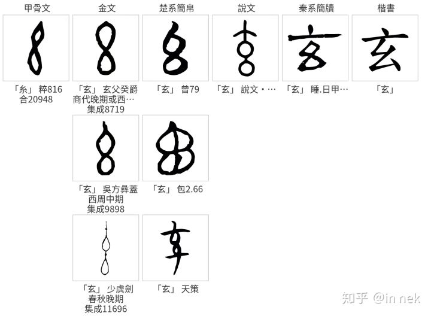

1. 道可道¶
道可道，非常道。名可名，非常名。
无名天地之始。有名万物之母。
故常无欲以观其妙。常有欲以观其徼。
此两者同出而异名，同谓之玄。玄之又玄，众妙之门。
“道”可以“道”，不是[通用的，一般理解的]道。 道的含义，暂时可以理解为“正确的路线 ，最低成本的方法，现实”等。更复杂的含义，等后面看懂恍惚的概念的时候，可能更好理 解一些。
名字可以[“名字”，命名，起到抽象的作用]，但不是[通用的，一般理解的，总能成立的] 的名字。
无 (这个名字) 标识天地开始的东西。
有 (这个名字) 标识所有东西的[母亲，母体，生出它们来的那个对象]（这两句可以是 互文）
所以，在世界上， (表现出) “无”，以便体现“妙”。 “妙”取“神奇的东西”，“妙哉，妙 哉”中那个妙等含义，表现为引起我们注意的那个东西。（道产生名，如果没有无，你根本 就不会看到你所关心的东西，所以，无是我们注意到“有”东西的原因，它是引起“注意”的 原因）
在世界上，体现出“有”，以便看到它的边界。 无让我们看到有，有让我们看到“有到哪里 ”，也就是我们注意的那个对象的范围
这两者（有和无）同出，而，不同名。都称为“玄”。
这里的“出”，解释为“出处”，引起命名的“原因”。玄，我很早以前看过一个解释说这是祭 祀时绑住牺牲挂在梁上的东西，引申为绳结，但现在在网上查说文解字，查不到这个意思 ，有知道的读者请告诉我。（但这个事情本身无所谓，不是绳结就是有无本身这个互相依 存的模型呗） [1]_。有无本质是同一个东西，都似乎对某个“道”的一种意识上的描述。水 里扶起一个气泡，你认为气泡是有，水就是无，你认为水是有，气泡就是无。但水里有个 气泡这个现实还是那个现实。我们不在乎你怎么在脑子中构建这个Digital Twis，我们把 这个东西统一称为玄，我们不在乎有无，我们在乎道在这个名下的反映。一个班，一个班 长九十九个普通同学，班长是个有，是妙九十九个同学是无。如果这个班九十九个班长， 只有一个普通同学。这个普通同学才是妙。这个名字怎么起，不改变问题的本质。
玄上又 (加) 玄，（是最终）看到所有“妙”成为现在这个样子的原因（开始的地方，进 入的地方，进门的地方）。 [1]
天下皆知美之为美，斯恶矣；皆知善之为善，斯不善已。
故有无相生，难易相成，长短相形，高下相倾，音声相和，前後相随。
是以圣人处无为之事，行不言之教。
万物作焉而不辞。生而不有，为而不恃，功成而弗居。
夫唯弗居，是以不去。
天下的人都知道美（好）是美（好），这是坏 (的存在本身) ；
都知道善（类似好的意思），这是不善。 善，羊在釜中
所以，有和无 (这两个名字) 互相产生对方（或者说，一方是另一方存在的原因）
困难和容易 (这两个名字) 互相成就对方（和前一句一个意思，只是换了词语）
长和短互相体现对方的存在
高和下互相体现对方的存在
音乐和人声互相和应（音和声不一定这个意思，但不关心具体含义不影响整个意思理解）
前和后互相跟随（其实也是前面一样的意思，这个翻译，不好，但你肯定知道什么意思）
所以，圣人做“无为”（“不做”）这样的事，行（也是做）“不言”（“不说”）的教化。所有 东西出现（发生）而不抗拒（它），长出来而不去拥有（它），做（它）而不（把它）作 为自己的东西，完成（它）而不认为自己拥有它。
正因为“不认为自己拥有它”，所以才不会“认为自己失去它”。
| [1] | 玄的解释 |
玄这个字的含义，如果看现在说文解字等解释，综合提取一个Pattern出来，感觉是是一个 “黑洞”：近处亮，往下看无穷无尽，所以，表示“深远”，“黑暗”这样的意象。
我个人过去在哪里看到“绳结”这个含义，我怎么都找不着了，当时觉得挺有道理，一方面 是图上来确实很像是房梁上挂的一串腊肉：

而没有“深”和“黑”的意向在里面。另一方面呢，有无这两个东西的实际含义，也没有深远 的意向在里面。所以，我个人其实更喜欢“绳结”这个意向，但这些都和理解本意关系不大 ，读者知道我什么意思就行了。
我曾经看过苏辙的解释，也很喜欢，也放在这里供大家参考：
凡远而无所至极者，其色必玄，故老子常以玄寄极也。言玄则至矣，然犹有玄之心在焉。玄之又玄则尽矣，不可以有加矣，众妙之所从出也。